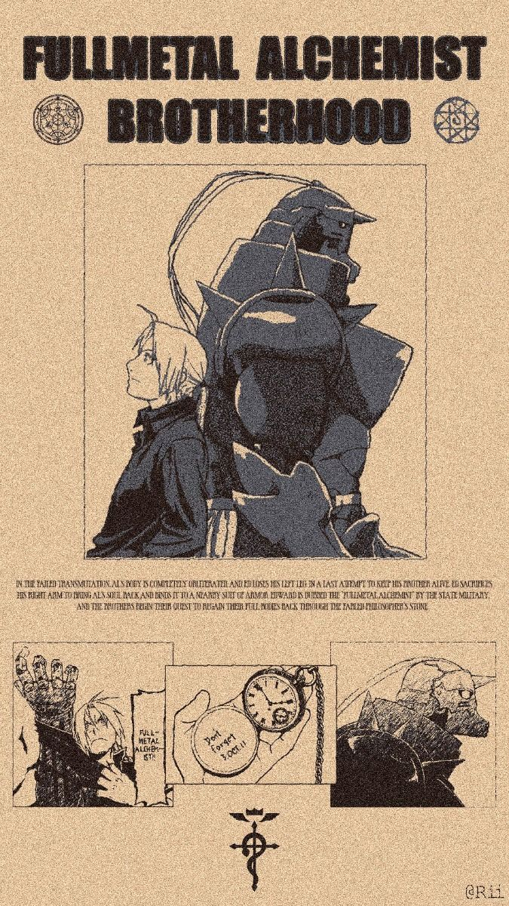
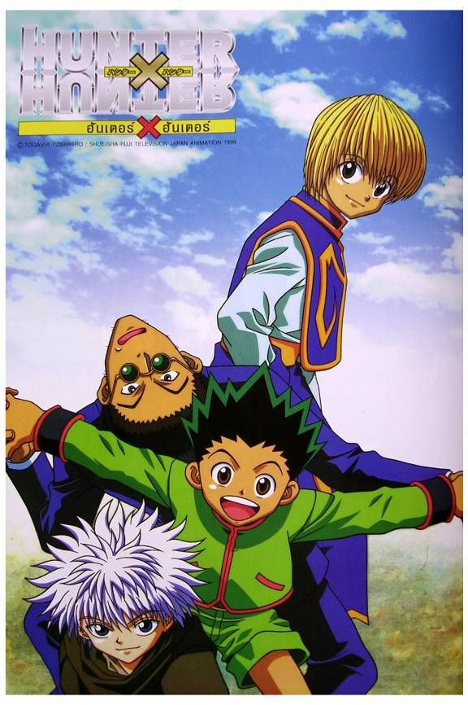
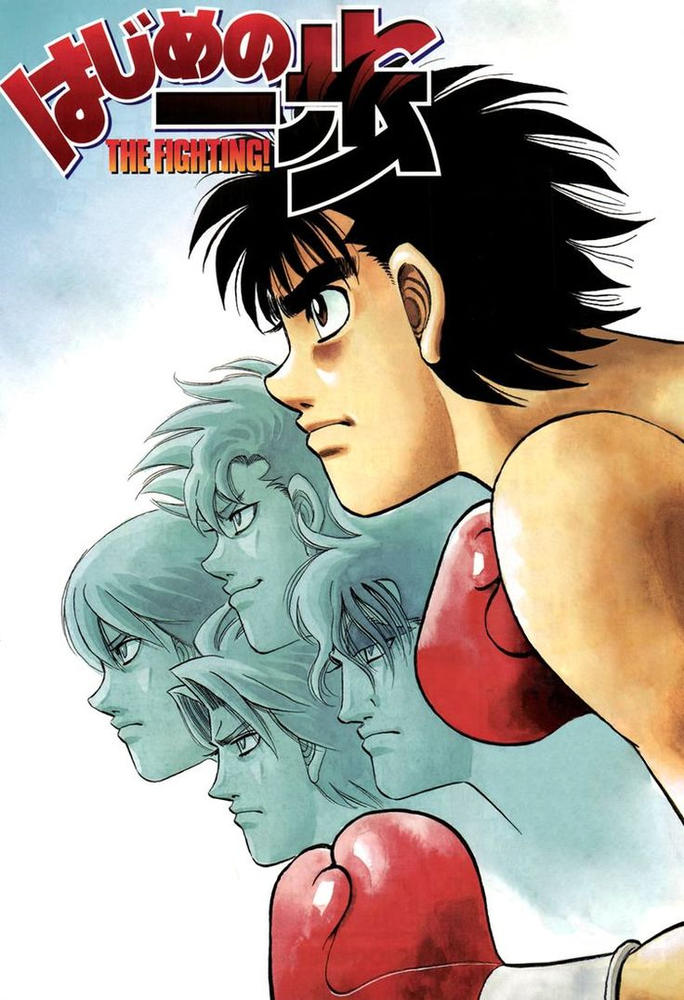

Anime is hand-drawn and computer-generated animation originating from Japan. Outside Japan and in English, anime refers specifically to animation produced in Japan. However, in Japan and in Japanese, anime describes all animated works, regardless of style or origin. Many works of animation with a similar style to Japanese animation are also produced outside Japan.


Manga are comics or graphic novels originating from Japan. Most manga conform to a style developed in Japan in the late 19th century, and the form has a long history in earlier Japanese art. The term manga is used in Japan to refer to both comics and cartooning. Outside of Japan, the word is typically used to refer to comics originally published in Japan.
